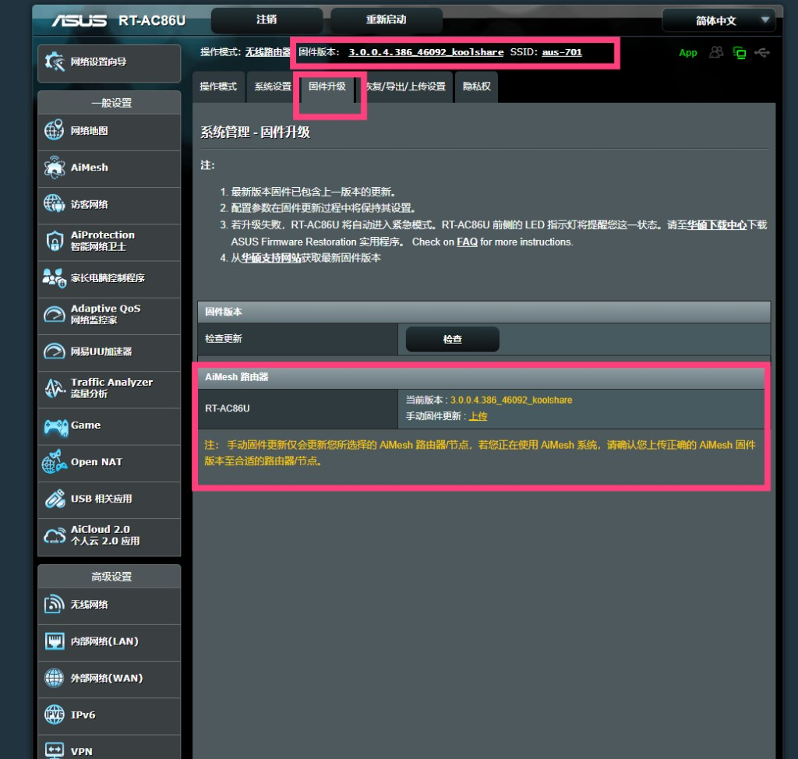
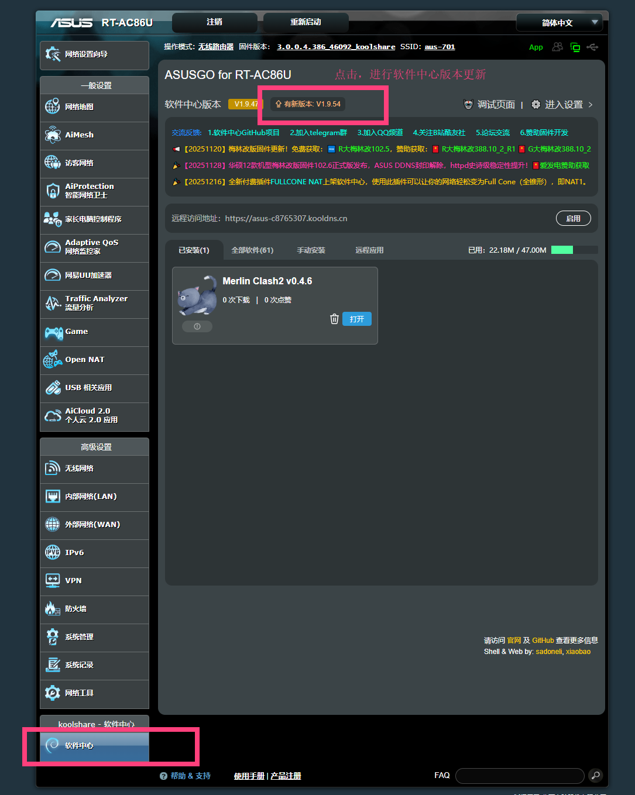
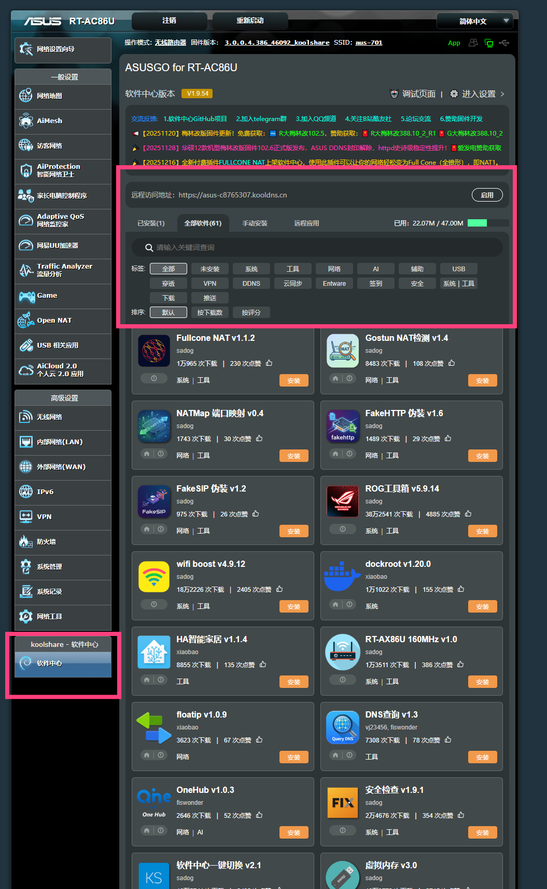
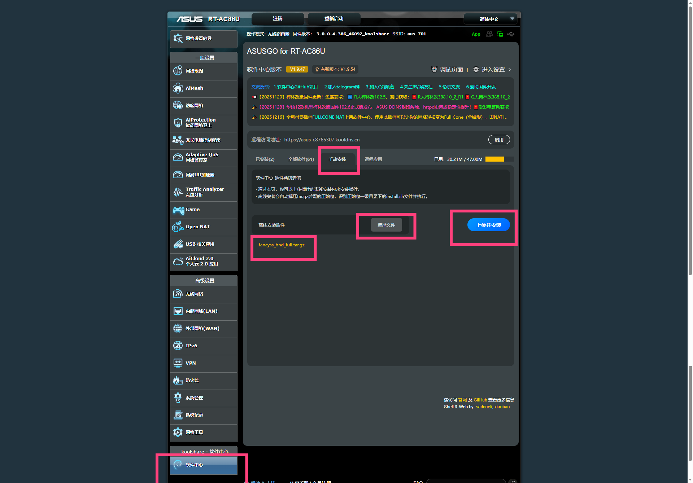
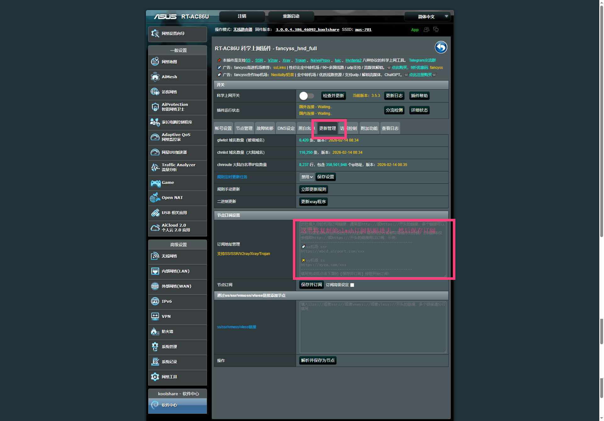
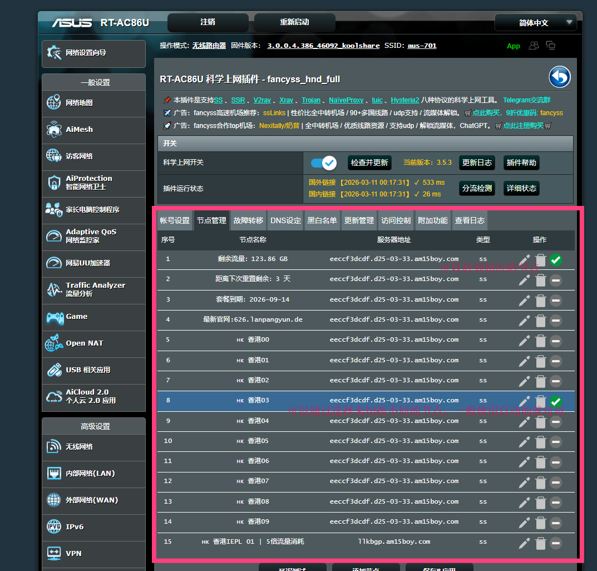

华硕路由器 Clash 翻墙教程 — 梅林固件 + MerlinClash
在华硕路由器上使用梅林固件与 MerlinClash 实现全屋科学上网
1. 硬件准备
推荐使用以下华硕路由器型号，均支持梅林固件与 MerlinClash：
| 型号 | CPU | 内存 | 接口 | Wi-Fi |
|---|---|---|---|---|
| RT-AX86U Pro | 博通四核 2.0GHz | 1GB | 2.5G+4×1G | Wi-Fi 6 |
| RT-AX88U Pro | 博通四核 2.0GHz | 1GB | 2.5G+8×1G | Wi-Fi 6 |
| RT-BE86U | 博通四核 2.6GHz | 2GB | 2.5G+多口千兆 | Wi-Fi 7 |
| GT-AX6000 | 博通四核 2.0GHz | 1GB | 2.5G+4×1G | Wi-Fi 6 |
| RT-AC86U | 博通双核 1.8GHz | 512MB | 1G WAN+4×1G LAN | Wi-Fi 5 |
入门级推荐 RT-AC86U；追求性能与性价比首选 RT-AX86U Pro；高端旗舰可选 RT-BE86U。
2. 固件下载
KoolCenter（推荐）：fw.koolcenter.com — 提供官改与梅林改版固件，按机型选择对应版本。
梅林官方：www.asuswrt-merlin.net — 原版梅林固件。
常用机型直达：RT-AX86U Pro · RT-AX86U · RT-AX88U Pro · RT-AX68U · TUF-AX3000 · TUF-AX5400 · RT-BE86U · RT-BE88U · RT-BE96U
固件命名规则：
102.x_y— 新平台/新内核，适用于 Wi-Fi 7/BE 系列及部分 AX 机型388.x_y— Wi-Fi 6/AX 系列主线分支386.x_y— 较老机型
下载后务必核对 MD5 校验值，确保文件完整。
3. 备份设置
刷机前务必备份当前配置，避免丢失宽带账号、Wi-Fi 密码等设置。
- 登录路由器管理界面（如
http://192.168.50.1或http://router.asus.com） - 进入 系统管理 → 备份/恢复/导出设置
- 点击 下载 保存当前配置到本地
4. 刷入固件
- 进入 系统管理 → 固件升级
- 点击「选择文件」，选择下载的
.w固件文件 - 点击「上传」开始刷机
- 等待 3–5 分钟，期间请勿断电或重启
- 路由器会自动重启完成升级
5. 恢复出厂
刷机完成后建议执行一次恢复出厂设置，以避免旧配置与新固件冲突。
- 进入 系统管理 → 恢复/导出/上传设置
- 勾选「恢复」旁的复选框，点击「恢复」按钮
- 路由器重启后，重新进入向导设置宽带、Wi-Fi 等基础参数
6. 验证版本
登录路由器管理界面，确认固件版本字符串显示为「Merlin」或「koolshare」字样，说明梅林固件已成功刷入。
同时检查是否出现「软件中心」入口，这是安装 MerlinClash 的前提。

7. 软件中心
若固件来自 KoolCenter，通常已自带软件中心。若未显示或需更新：
- 进入 KoolCenter 官网，按机型下载对应软件中心安装包
- 在路由器管理界面中找到「软件中心」或「离线安装」入口
- 上传并安装软件中心，完成后刷新页面


8. 安装 MerlinClash
离线安装步骤：
根据路由器型号和 CPU 架构选择对应版本下载：
| 版本 | 架构 | 适用机型示例 |
|---|---|---|
| MC2_0.4.6_ARM64 | ARM V8 64 位 | RT-AX86U Pro、RT-AX88U Pro、GT-AX6000、RT-BE86U、RT-BE88U、RT-BE96U、RT-AX68U、RT-AC86U 等 |
| MC2_0.4.6_ARM32 | ARM V7 32 位 | RT-AX82U、RT-AX56U、RT-AX58U、RT-AX1800、TUF-AX3000、TUF-AX5400、GT6、RAX50 等 |
右键点击 → 链接另存为，或直接点击下载。若不确定该选 ARM64 还是 ARM32，优先按机型表判断，不要盲装。
- 下载对应版本的
.tar.gz安装包（ARM64 适用于 RT-AX86U PRO 等，ARM32 适用于 AX82U 等） - 进入 软件中心 → 离线安装
- 上传
.tar.gz文件 - 点击「安装」后等待完成
9. 订阅导入
在 MerlinClash 中配置订阅：
- 打开 MerlinClash 主界面
- 进入 订阅设置
- 粘贴订阅链接（从机场/代理服务商获取）
- 点击「更新」拉取节点列表
订阅链接通常格式为：https://xxx.com/api/v1/client/subscribe?token=xxx，请妥善保管勿泄露。
10. 节点选择
在 MerlinClash 的节点列表中：
- 可对节点进行延迟测试，选择延迟最低、稳定性最好的节点
- 支持手动选择节点或使用「自动选择」
- 建议定期更新订阅以获取最新节点
11. 分流规则
MerlinClash 支持规则分流，可按需配置：
- 流媒体：Netflix、Disney+、HBO 等走专用节点
- AI 服务：ChatGPT、Claude 等走代理
- 游戏：游戏加速节点单独配置
- 国内直连：GEOIP CN、国内域名直连
规则从上到下匹配，命中即执行对应动作。
12. 游戏加速
在 MerlinClash 中配置游戏模式：
- 选择低延迟、专线游戏节点
- 可针对特定游戏或平台启用加速
- 建议使用 UDP 支持良好的节点
13. 流媒体解锁
针对 Netflix、Disney+ 等流媒体：
- 选择支持对应地区解锁的节点（如美区、港区等）
- 部分机场提供流媒体专用节点
- 在分流规则中可单独配置流媒体域名走代理
14. 广告过滤
MerlinClash 支持广告过滤规则：
- 在规则配置中添加 REJECT 规则屏蔽广告域名
- 可引用第三方广告过滤规则集
- 注意：过度过滤可能影响部分网站正常使用
15. 监控与日志
MerlinClash 提供：
- 状态监控：连接状态、流量统计
- 日志查看：排查连接问题、规则命中情况
- 性能指标：CPU、内存占用
可通过 Web 管理面板或路由器内嵌界面查看。
16. 常见问题
节点列表为空 — 检查订阅链接是否有效；检查网络；部分机场需在网页端重新生成订阅。
订阅更新失败 — 确认路由器可访问外网；检查订阅链接格式；尝试手动更新。
速度下降 — 更换节点；检查节点是否过载；确认宽带带宽是否充足。
DNS 问题 — 在 MerlinClash 中启用 DNS 配置；使用 DoH/DoT；检查 DNS 泄露。
17. Fancyss 可选方案
Fancyss 是华硕官改 / 梅林固件软件中心生态中的另一套科学上网插件方案，可视作 MerlinClash 之外的补充选择。
根据其公开 README，Fancyss 支持较多平台代理包和协议组合，常见平台包括 arm、hnd、hnd_v8、qca、mtk，并区分 full 与 lite 两类版本。
- 适合人群：更熟悉华硕软件中心插件生态、需要更细平台包划分、或希望在 full / lite 间取舍的用户
- 当前仓库提供：fancyss_hnd_full.tar.gz
- 重要提醒：该文件不是通用包，安装前请先按 Fancyss 官方平台表核对机型

典型流程是：在软件中心进入手动安装，上传对应平台的 Fancyss 离线包，安装完成后在已安装插件中打开 Fancyss。

进入插件后，可在订阅、更新管理、节点管理等页面导入节点信息，再启用插件并切换线路。

本节依据 Fancyss 公开资料整理；平台与版本请以原项目为准。参考：README · 历史安装包 · 源码 · 项目页